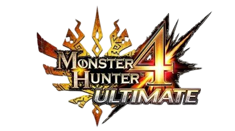

<!DOCTYPE html>
<html>
    <title>Monster Hunter 4 Ultimate</title>
    <link rel="stylesheet" href="../style.css">
    <link rel="icon" href="../gameImages/mh4uLogo.png">
</html>
<body>
    <div>
    <h1></h1>
    <p>Monster Hunter 4 Ultimate or Monster Hunter 4 G is the 2nd Monster Hunter title on the Nintendo.</p>
    <h1>New features</h1>
    <p>Now Monster Hunter is more vertical. You can climb on higher ground and hit the Monster with a jump attack to mount it.</p>
    
    <table>
        <tr>
            <td>Release Dates</td>
            <td>
                <ul>
                    <li>Japan - 11th October 2014</li>
                    <li>North America - 13th February 2015</li>
                    <li>Europe - 13th February 2015</li>
                    <li>Australia - 14th February 2015</li>
                </ul>
            </td>
        </tr>
        <tr>
            <td>Flagship Monster</td>
            <td>Seregios</td>
        </tr>
    </table>
</div>
<footer>
    
    <p>I'm Lukas and am a huge Monster Huner fan and that's why I made my wiki about the game.</p>
</footer>
</body>